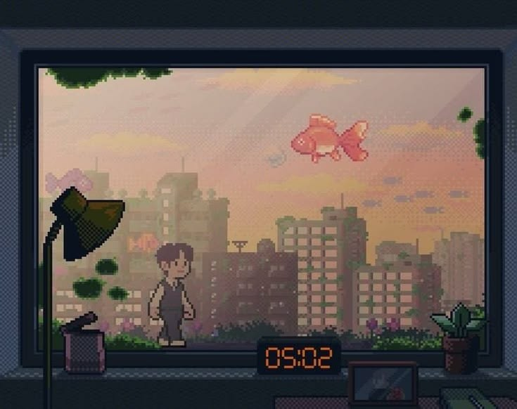

THE TRACK / LYRICRACHA
Into the Current
SEUNGMIN
- ALBUM
- SKZ-REPLAY 2026 Pt.1
- RELEASE
- 2026.05.02
- UPDATED
- 2026.11.10
- LANGUAGE
- KOREAN / ENGLISH
- LYRICS
- HAN (3RACHA)
- COMPOSED
- HAN (3RACHA)、NEUT
02 / THE VOICES
Part Colors
03 / LYRIC DATABASE
Lyrics
ちゃぐん おはん そげ
작은 어항 속에
小さな水槽の中に
すむ すぃじ あんぬん っこっとぅり
숨 쉬지 않는 꽃들이
息をしない花たちが
いぇっぷげ ぴおっちまん ひゃんぎん なじ あんぬん
예쁘게 피었지만 향긴 나지 않는
美しく咲いても香りはしない
のど なわ がっくな
너도 나와 같구나
君も僕と同じなんだね
ゆり のも ぼいん
유리 너머 보인
ガラスの向こうに見える
ぱだん おっとん ごしるっか
바단 어떤 곳일까?
海はどんな場所だろう
すちょん ぼん へおむちょ ぶぁど
수천 번 헤엄쳐 봐도
何千回泳いでみても
たっちる あんぬん ね もすび
닿질 않는 내 모습이
届くことのない僕の姿
おんじぇぶとんが
언제부턴가
いつからだろう
いくすけじん いごせ なむん うりん
익숙해진 이곳에 남은 우린
慣れきったこの場所に残った僕たちは
ちなちげ っと こくちょんぐぁ とぅりょうむ
지나치게 또, 걱정과 두려움
あまりにも多くの心配と恐れ
もどぅん げ そっきょ
모든 게 섞여
すべてが混ざり合って
せろうん もん ごせ ちょ ぱどが のむしるでぬん ぱだえ
새로운 먼 곳에 저 파도가 넘실대는 바다에
新しい遠い場所、波がうねるあの海に
もむる まっきょ ふるろがるれ
몸을 맡겨 흘러갈래
身を任せて流れていきたい
い ちゃぐん こんがね はん ぱるる ねでぃでょ
이 작은 공간에 한 발을 내디뎌
この小さな空間から一歩踏み出して
ぱんっちゃぎぬん とぅのるぶん ちょ ぱだろ
반짝이는 드넓은 저 바다로
きらめく広大なあの海へ
あむど ちゃっち あんぬん おれどぇん
아무도 찾지 않는 오래된
誰も訪れない古びた
いっきまん かどぅく ちゃん い ふりん ゆりるる のも
이끼만 가득 찬 이 흐린 유리를 넘어
苔だらけの曇ったガラスを越えて
ちゃぐん ね っくむどぅるる ちょぐむ っとろっとぅりょ
작은 내 꿈들을 조금 떨어뜨려
小さな僕の夢を少しずつ落として
い ぱだえ すみょどぅろ がる こや
이 바다에 스며들어 갈 거야
この海に溶け込んでいくんだ
おはん そげそ ちょだぼん ぴょり
어항 속에서 쳐다본 별이
水槽の中から見上げた星が
おぬ なる ねげ まるる ごろ
어느 날 내게 말을 걸어
ある日僕に話しかけた
あいや のん あじく おりご
아이야, 넌 아직 어리고
坊や、君はまだ幼くて
ちょ ぱだぬん よじょに ふるろ
저 바다는 여전히 흘러
あの海は今も流れている
のえ せさんうん ごぎ いっち あな
너의 세상은 거기 있지 않아
君の世界はそこだけじゃない
にが おるりょだぼん とぅんぐん はぬるまん
네가 올려다본 둥근 하늘만
君が見上げた丸い空だけが
いんぬん げ あにゃ くごする なわそ
있는 게 아냐 그곳을 나와서
すべてじゃない、そこを出てみれば
ぼん はぬるん っと たるるごる
본 하늘은 또 다를걸
見える空はきっと違うはず
ちょぐむしく くみ が ちょむじょむ むり っぱじご
조금씩 금이 가 점점 물이 빠지고
少しずつひびが入り、水が抜けていく
く さいるる ひむっこっ ぷでぃちょ っけじる とぅたん ぴょく
그 사이를 힘껏 부딪쳐 깨질 듯한 벽
その隙間に力いっぱいぶつかる、壊れそうな壁
なるかろぷけ ぷそじん ゆり ちょがぎ ちょぐむ ぱきょど
날카롭게 부서진 유리 조각이 조금 박혀도
鋭く砕けたガラスの破片が少し刺さっても
くぇんちゃな いじぇん こぢにっか
괜찮아 이젠 곧이니까
大丈夫、もうすぐだから
せろうん もん ごせ ちょ ぱどが のむしるでぬん ぱだえ
새로운 먼 곳에 저 파도가 넘실대는 바다에
新しい遠い場所、波がうねるあの海に
もむる まっきょ ふるろがるれ
몸을 맡겨 흘러갈래
身を任せて流れていきたい
い ちゃぐん こんがね はん ぱるる ねでぃでょ
이 작은 공간에 한 발을 내디뎌
この小さな空間から一歩踏み出して
ぱんっちゃぎぬん とぅのるぶん ちょ ぱだろ
반짝이는 드넓은 저 바다로
きらめく広大なあの海へ
あむど ちゃっち あんぬん おれどぇん
아무도 찾지 않는 오래된
誰も訪れない古びた
いっきまん かどぅく ちゃん い ふりん ゆりるる のも
이끼만 가득 찬 이 흐린 유리를 넘어
苔だらけの曇ったガラスを越えて
ちゃぐん ね っくむどぅるる ちょぐむ っとろっとぅりょ
작은 내 꿈들을 조금 떨어뜨려
小さな僕の夢を少しずつ落として
い ぱだえ すみょどぅろ がる こや
이 바다에 스며들어 갈 거야
この海に溶け込んでいくんだ
オー
Oh
ああ
オー
Oh
ああ
オー
Oh
ああ
オー
Oh
ああ